JabutiBar
An oasis of relaxation in the countryside of São Paulo.
Visual identity for an open-air bar in Itaporanga, in the countryside of São Paulo state, Brazil. JabutiBar celebrates life outdoors, quality food and drink, and local culture. The brand comes from the nature that surrounds the place and the light atmosphere of the countryside, translating a philosophy of welcome and celebration.
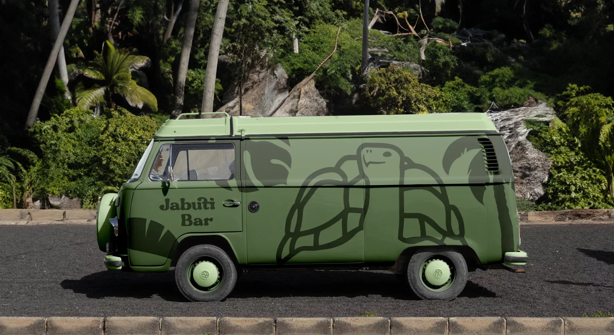
A place where worries vanish in the breeze and laughter echoes among the trees. The tortoise, in no rush, became the symbol of that rhythm. Foliage greens, a paper cream and a rounded lettering give the brand the relaxed tone of the countryside, and the leaf illustrations bring the forest into every piece.
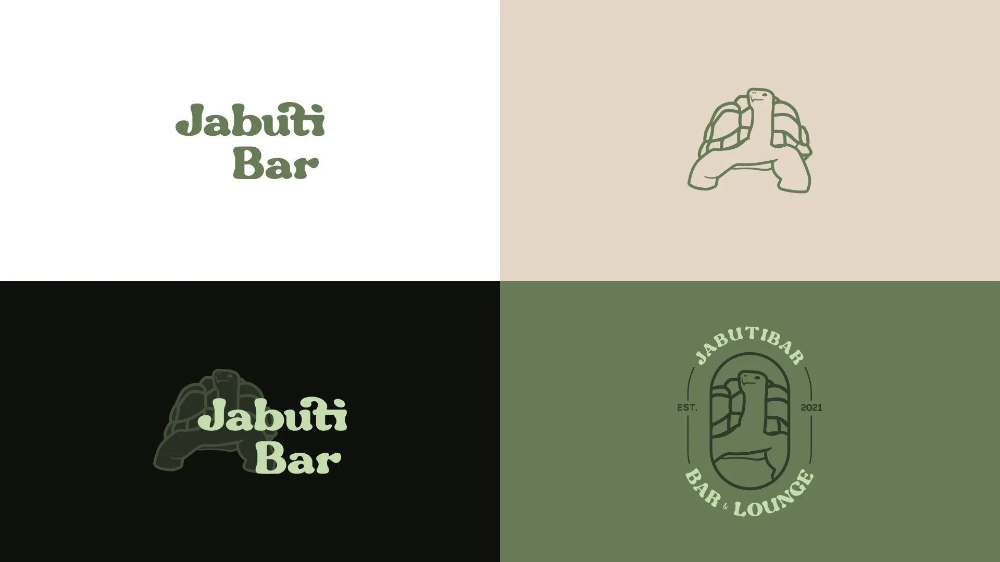
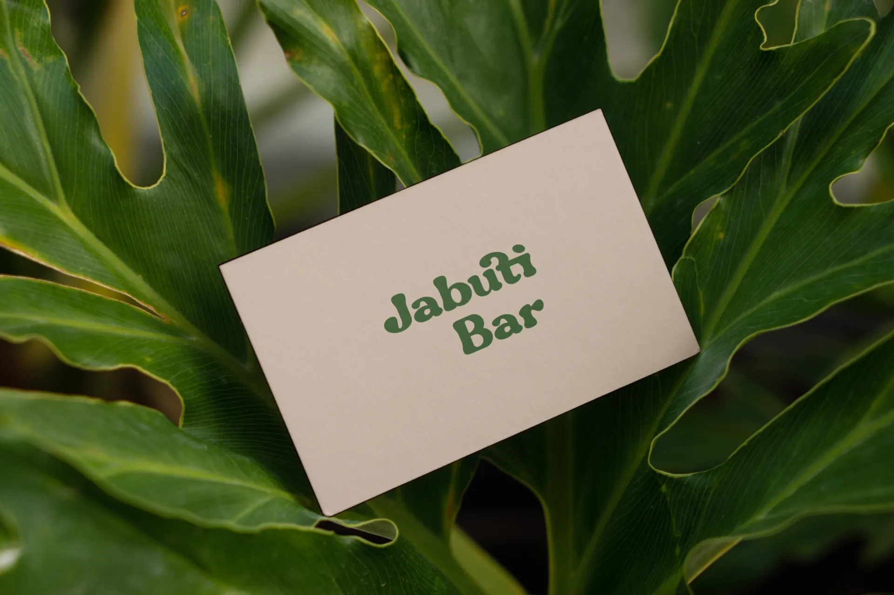
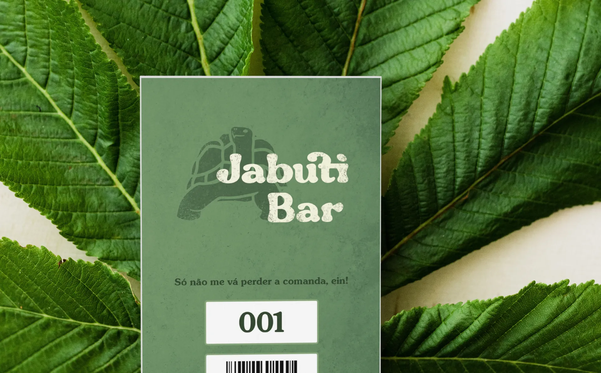
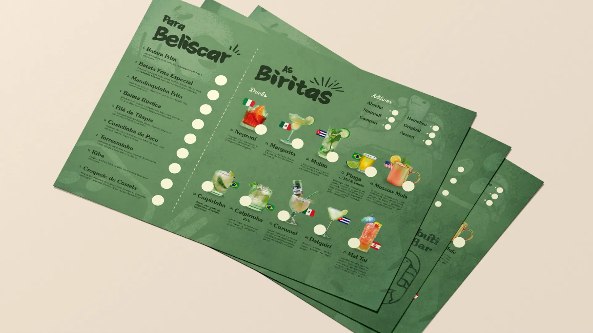
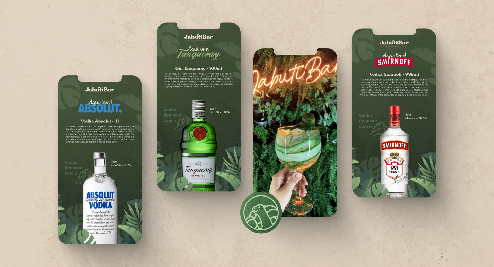
A celebration of life outdoors.
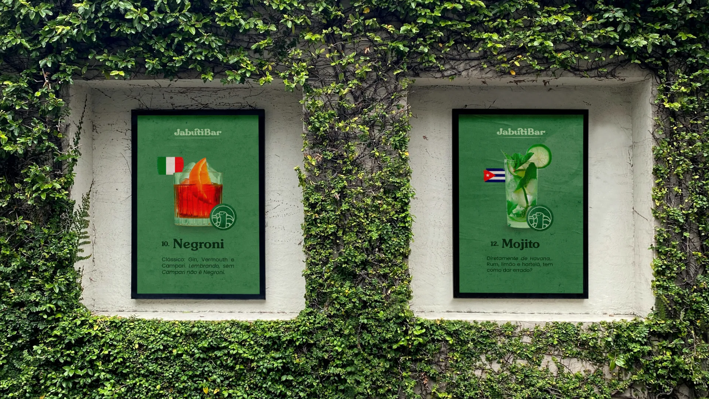
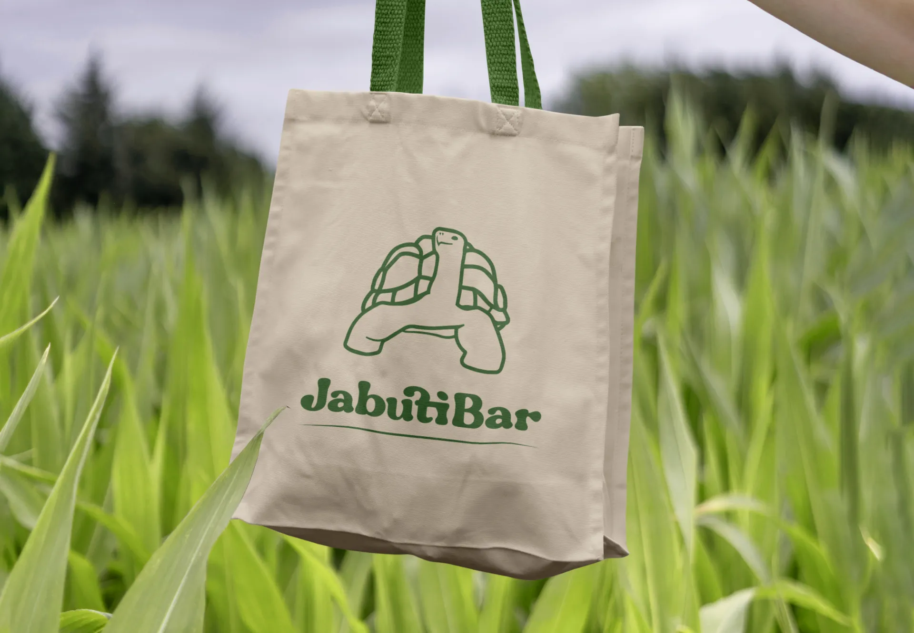
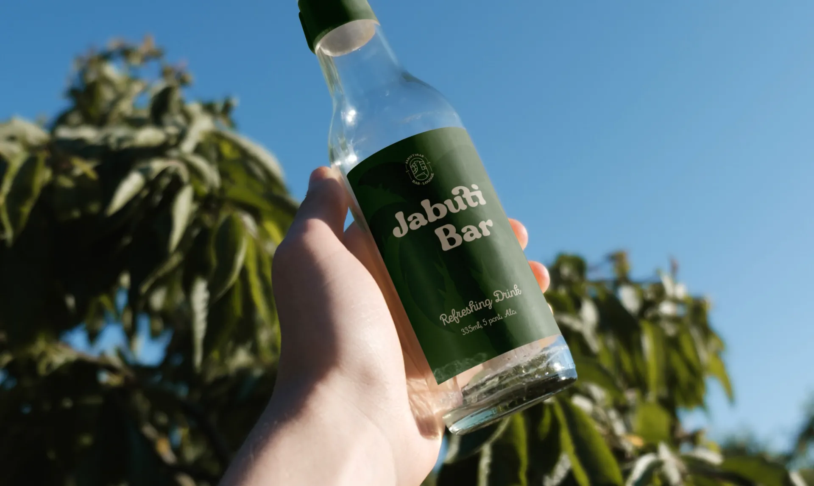
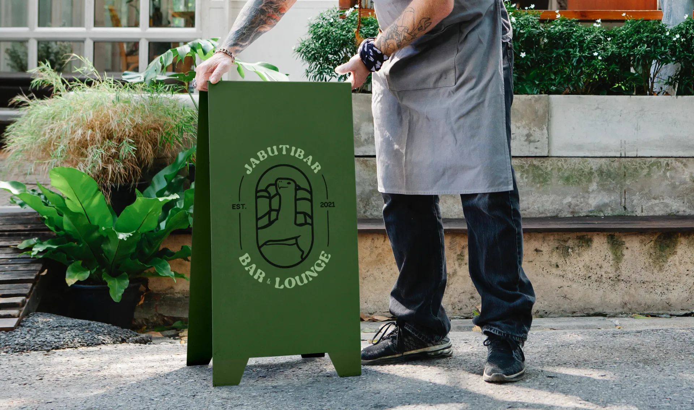
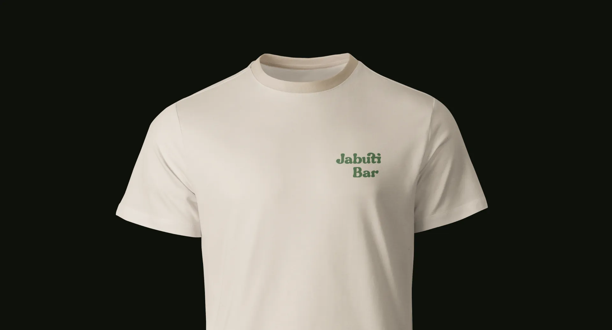
- Illustrations
- Nícolas de Queiróz e Artur Tadao Massuda
- Design and applications
- Nícolas de Queiróz
- Briefing
- Leonardo Diniz e Nelson Fiuza